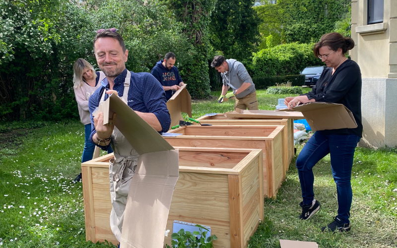
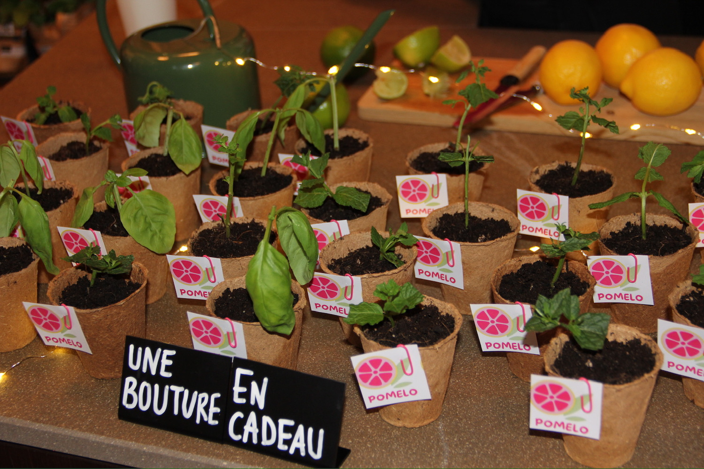
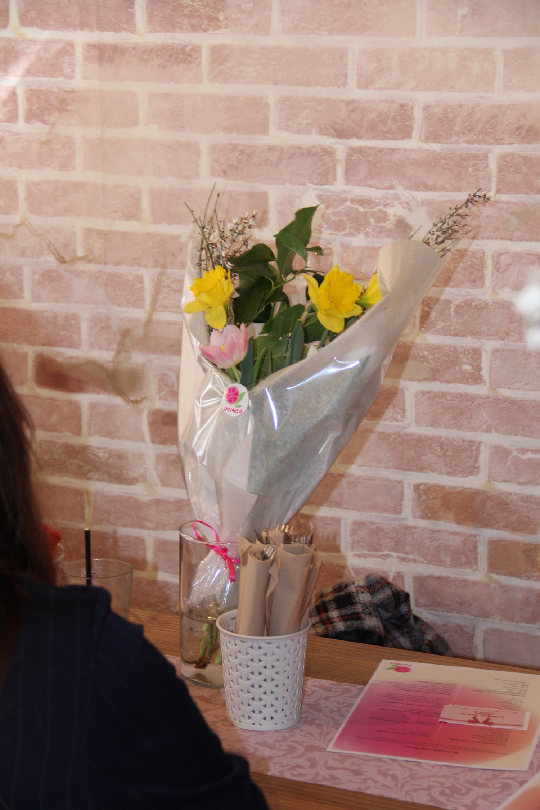
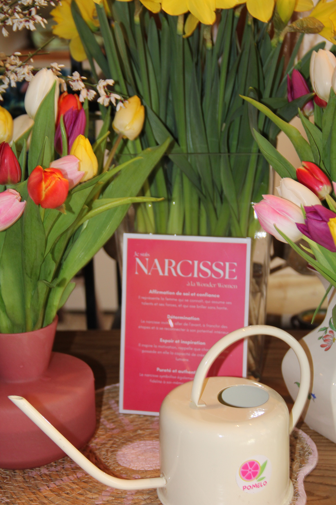
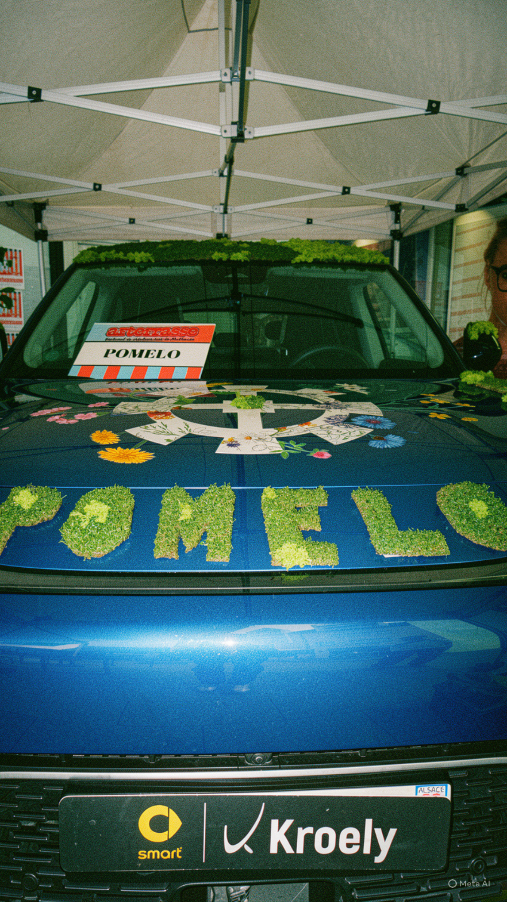
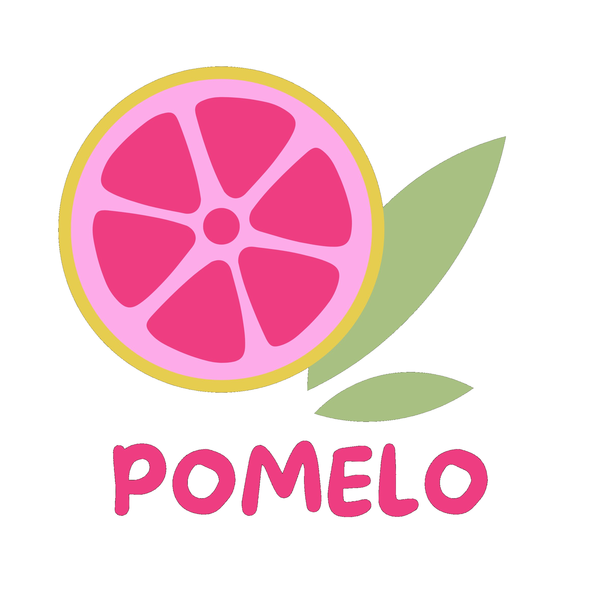

20 minutes dehors suffisent pour faire baisser le cortisol de façon mesurable. Une journée de team building nature en Alsace ? Les chercheurs ne savent même plus comment quantifier l'effet.






L'agence événementielle pour faire l'expérience de la nature. Pomelo transforme vos espaces de travail en terrains d'aventure verte, et vos équipes en véritables communautés.
Visiter le site →Les effets de la nature sur le cerveau humain sont mesurés, reproductibles et publiés dans les grandes revues scientifiques internationales. Ce que vos équipes ressentent en pleine nature, les chercheurs le mesurent dans leur sang.
Comparées aux promenades urbaines, les immersions en pleine nature entraînent une baisse mesurable du cortisol, de la fréquence cardiaque et de la tension artérielle. Le système nerveux parasympathique — celui du repos — s'active dès les premières minutes.
Dr. Qing Li, Nippon Medical SchoolTrois jours en forêt augmentent de 50% l'activité des cellules Natural Killer (NK), essentielles pour combattre infections et maladies. Et ce boost se maintient plus d'un mois après l'expérience — un investissement santé durable pour vos équipes.
Dr. Qing Li, publié 2010Les employés entourés d'éléments naturels sont 15% plus créatifs que leurs collègues en open-space classique. Un atelier collaboratif en plein air génère plus d'idées nouvelles qu'une réunion de brainstorming en salle de réunion.
Université de MelbourneUn team building nature en Alsace, ce n'est pas juste une sortie agréable. C'est une décision RH prouvée scientifiquement. Voici ce que le plein air favorise naturellement.
Sans les hiérarchies formelles du bureau, la parole se libère. Les activités outdoor créent naturellement des situations où chacun doit écouter, proposer, décider ensemble.
+34% de communication informelle (MIT, 2023)Relever un défi en plein air ensemble — construire, planter, survivre — crée des liens durables. Les équipes ayant partagé une expérience physique collective montrent une hausse de 30% de confiance mutuelle.
+30% de confiance (Journal of Applied Psychology)20 minutes en nature suffisent pour déclencher une baisse mesurable du cortisol. Une journée de team building outdoor en Alsace agit directement sur les marqueurs biologiques du stress.
-12,4% de cortisol (Dr. Qing Li)79% des salariés confirment que le team building améliore leurs relations professionnelles — et la motivation suit. Les équipes reviennent du plein air plus engagées et plus soudées.
79% d'amélioration des relations (Teamland, 2025)Sortir physiquement du cadre de travail permet au cerveau de se régénérer. Les activités nature et plein air créent une rupture bénéfique — les souvenirs formés dehors sont plus forts et durables.
+50% de créativité le lendemain (Univ. Michigan)Les Vosges à 30 min, la forêt de Haguenau, les bords du Rhin, les vignobles… En Alsace, vos équipes n'ont jamais besoin de parcourir plus d'une heure pour se retrouver en pleine nature.
100km de forêts accessibles depuis StrasbourgUne sélection d'activités de team building nature en Alsace. Cliquez pour voir le détail et demander un devis.
Vos équipes n'ont pas besoin de partir loin. En Alsace, des paysages extraordinaires sont accessibles en quelques dizaines de minutes depuis n'importe quelle entreprise.
Forêts de sapins, chaumes, panoramas sur la plaine d'Alsace. Idéal pour randonnées, survie et activités de leadership.
30 min de StrasbourgKayak, canoë, activités nautiques. Un cadre naturel unique à deux pas du centre-ville, sans logistique complexe.
5 min du centrePaysages de vignes et villages alsaciens. Combinable avec des activités gastronomiques pour une journée complète.
20 min de StrasbourgL'une des plus grandes forêts de plaine d'Europe. Parfaite pour les activités de cohésion en grand groupe.
30 min de StrasbourgEntre plaine et montagne, ce secteur offre une diversité de terrains pour toutes les activités outdoor.
30 min de StrasbourgBiodiversité exceptionnelle. Idéale pour les ateliers nature, sensibilisation RSE et activités de pleine conscience.
15 min de StrasbourgParcourez toutes nos activités nature, filtrez par format et budget, et contactez directement les prestataires.